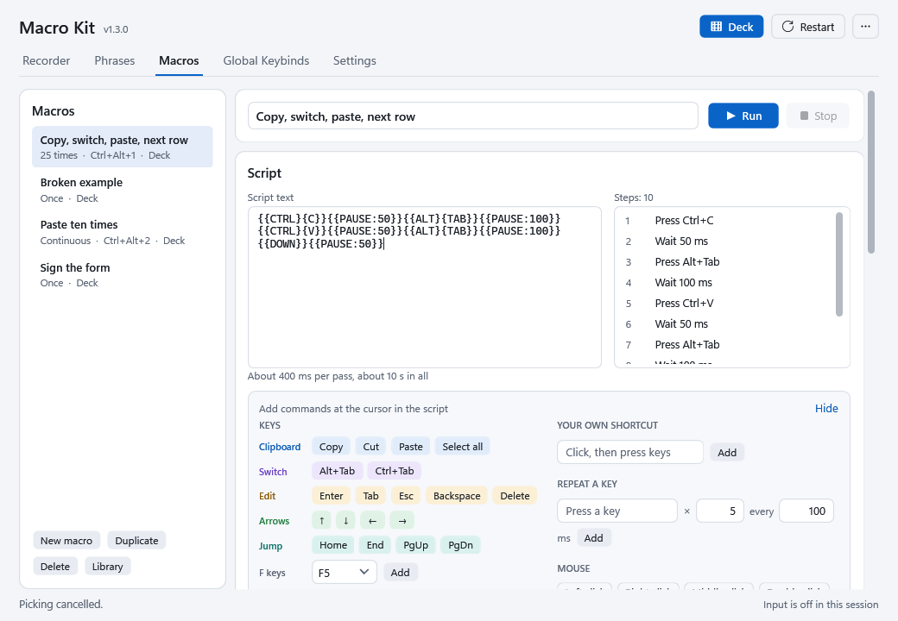

Record and replay your mouse and keyboard, turn short triggers into whole paragraphs, and run small macro scripts in the window you choose. Free and open source.
Windows 10 and 11, 64-bit. Free forever, no account. Release history · Source code

No trial, no nag screens. These never need a key.
Record mouse and keyboard, then play it back once, a set number of times or continuously, at 0.1x to 100x speed.
Type a trigger such as ;sig in any program and it becomes the text you saved. Your clipboard is kept intact.
Write {{CTRL}{C}}{{ALT}{TAB}}{{CTRL}{V}} or click commands together from folding groups: keys, repeats, take turns, open apps and websites, windows, volume and sounds. See every step as you type.
Pick the target window by clicking it. A macro stops with a clear message if that window goes missing or loses focus.
A small always-on-top button panel that never steals focus, global hotkeys for each macro, and Esc to stop.
Every shortcut your apps use in one list, with clashes marked. Press keys to see whether they are free.
A one-time purchase that supports the work and adds a few power features. Same app: paste a key in Settings and they switch on.
| Feature | FREE | PRO |
|---|---|---|
| Recorder, phrases, macro scripts, Deck, hotkeys, Global Keybinds | ✓ | ✓ |
| Export / import of all your settings and data | ✓ | ✓ |
Multi action: repeat steps ({{LOOP:5}} … {{ENDLOOP}}), take turns between choices, pick one at random, run another macro | ✓ | ✓ |
| Actions: open programs, files and websites, close a program, switch to or wait for a window, set the volume, play a sound, lock the PC | ✓ | ✓ |
| Macro library: every pack | ✓ | ✓ |
Conditions: {{IF:$clip~http}} … {{ELSE}} … {{ENDIF}}, and {{IFWINDOW:Excel}} | – | ✓ |
| Scheduled macros: daily at a time, every few minutes, or once at a date and time | – | ✓ |
| Pro badge in About, and a thank-you | – | ✓ |
After you pay, your license key arrives by email. Open Macro Kit, go to Settings → About → Enter license key, and paste it.
Straight answers.
The full source code is on GitHub, so anyone can read exactly what it does. It has no ads, no tracking and no account. Its only network request is the launcher's update check against the public release page. Until code signing is in place, Windows SmartScreen may show "Windows protected your PC" for the installer: choose More info → Run anyway, or build it yourself from the source.
That is how it works. Recording needs to see your clicks and keys. Phrases need to see what you type so they can spot a trigger like ;sig. Hotkeys need to hear their keys in any window. Playback and macros press keys and move the mouse for you. It keeps only your recordings, which you can delete, and nothing it sees leaves your PC. Some antivirus tools flag any program that does this, which is why the source is public.
No. The key is checked on your PC against a public key built into Macro Kit, and it is never sent anywhere. It also moves to a new PC with Export / import.
Ask for a refund within 30 days of buying, for any reason, by replying to your receipt email. You get your money back.
No. They run while Macro Kit is running, and sitting in the tray is fine. A time missed while it was closed is not made up. The PC also needs to be on and unlocked, because Windows does not let any program type into a locked screen.
Your macros stay where they are. Without a key, the Pro features switch off, and a macro that uses conditions says so instead of running. Repeat blocks and actions keep working.
Reply to your receipt email and you will get it again.